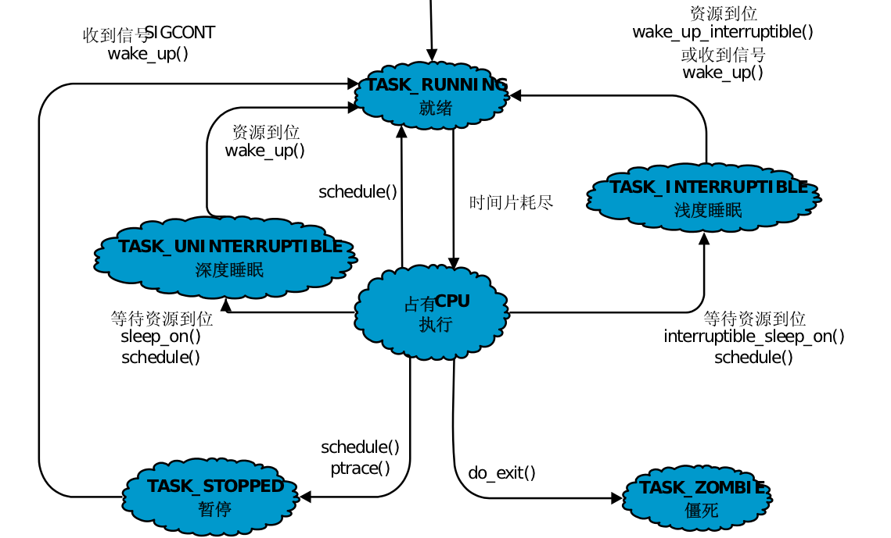

进程
拥有资源和独立运行的基本单位。可以使用fork来衍生新进程，衍生的新进程称之为子进程，会获得父进程的数据段、堆和栈的副本，进程间的副本都是独立的，进程内的副本的修改对其他父进程或者兄弟进程不可见。
标识
把进程的优先级、状态、虚拟地址范围以及各种访问权限保存到进程描述符中
- PID（进程ID）
- PPID（父进程ID）
PID单调递增，当达到最大值时，重新开始查找可以使用的ID
状态
- 可运行状态 (TASK_RUNNING R)
- 可中断的睡眠状态 (TASK_INTERRUPTIBLE S)
- 不可中断的睡眠状态 (TASK_UNINTERRUPTIBLE D)
- 暂停状态或者跟踪状态 (TASK_STOPPED&TASK_TRACED T)
- 僵尸状态 (TASK_DEAD-EXIT_ZOMBIE Z)
- 退出状态 (TASK_DEAD-EXIT_DEAD)
linux进程状态转换图

不能中断的操作称之为原子操作，所有的系统调用都是原子操作
信号
操作系统信号（signal），本质是用软件模拟硬件的中断机制，用来通知某个进程有某个事件发生了。
linux 下支持的信号有62种，可使用kill -l查看，1-31的信号属于标准信号（不可靠信号）34-64属于实时信号（可靠信号）
进程响应信号
- 忽略
- 捕捉
- 执行默认操作
线程
在早期的计算机操作系统中，拥有资源和独立运行的基本单位是进程。由于进程是资源的拥有者，创建、撤销和切换存在较大的开销，并且对称多处理机（Symmetric Multi-Processor,SMP）的出现，可以满足多个处理器同时运行一个进程的计算，因此出现了程序执行流的最小单元——线程。
内容
- 线程ID
- 当前指令指针（PC）
- 寄存器集合
- 堆栈组成
线程是由系统调度和派生的基本单位，线程只拥有少量在运行中比不可少的资源，同一进程产生的所有线程可用共同拥有这一进程中的所有资源
状态
- 就绪
- 阻塞
- 运行
线程状态图

纤程和协程
此种是以用户方式代码实现，不受操作系统内核管理，由运行时或者用户自己调度，采用非抢占式调度方式。
常见的有golang中goroutine采用的是CSP（communicating sequential processes）模式、erlang采用的是Actor模型。
通信
同步和异步
同步是指用户线程发起I/O请求后需要等待，或者轮询内核I/O操作完成之后才能继续执行异步是指用户线程发起I/O请求后继续执行，当内核I/O操作完成后会通知用户线程，或者调用用户线程注册的回调函数
阻塞和非阻塞
阻塞是指I/O操作需要彻底完成后才换回用户空间非阻塞是指I/O操作被调用后立即返回给用户一个状态值，无须等到I/O操作彻底完成